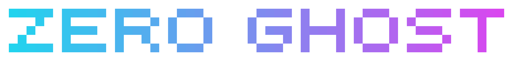
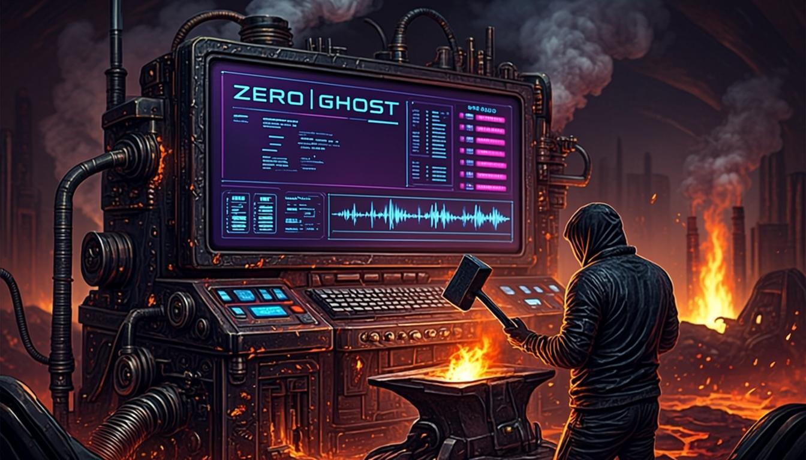
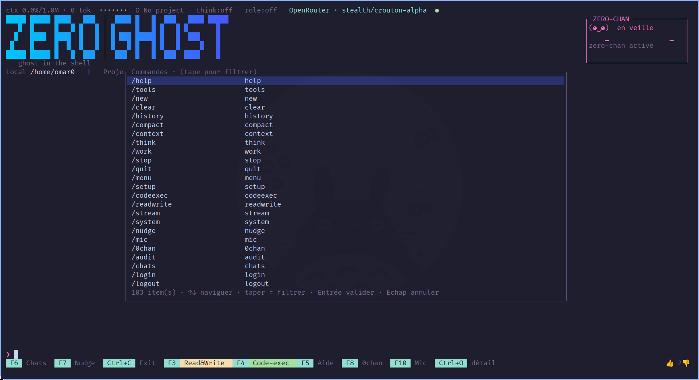
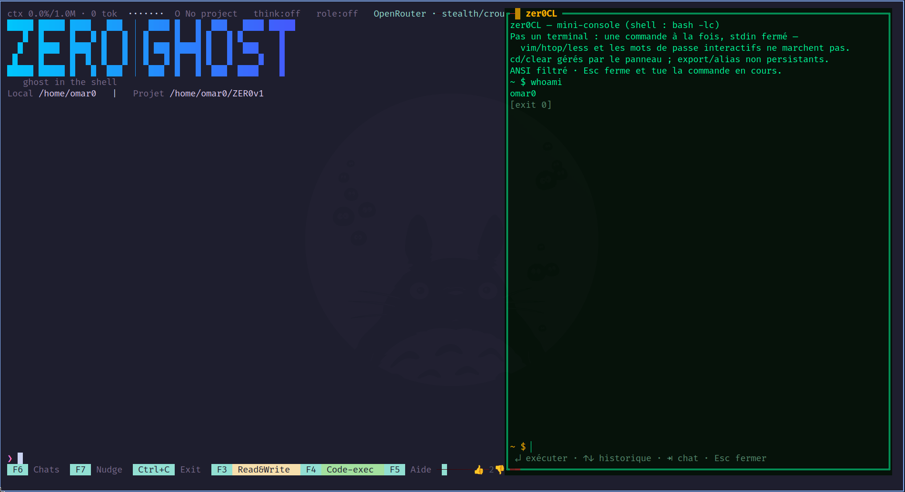
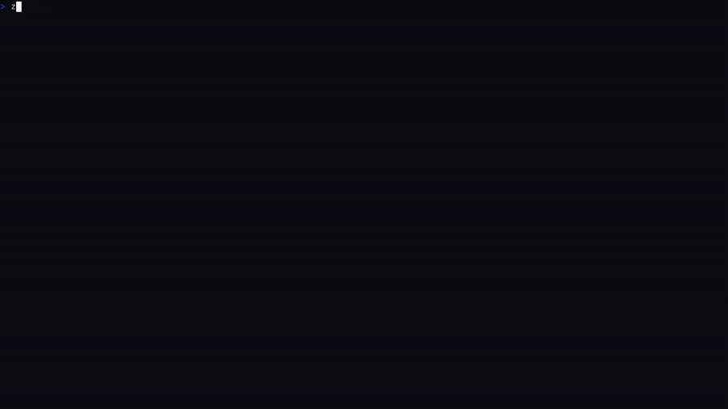

ZER0│GH0ST
Un agent IA qui vit dans ton terminal — ghost in the shell.


Rust · TUI · local ou cloud · aucune clé requise · MIT
Ce que c'est
Boucle d'agent
utilisateur → modèle → outils → réponse, avec streaming et détection de boucle.
Outils réels
code_exec (shell), text_editor (fichiers), web_search, mémoire, tâches.
Multi-provider
10 providers + custom, failover, backoff 429, modèles :free.
Passerelle zer0-gw
Binaire séparé, 3 modes de sécurité (standard/anonyme/zero-knowledge) — chiffrement de bout en bout.
Zero-chan (voix)
Assistante vocale intégrée : STT Whisper local, avatar kawaii animé.
Telegram
Converse à distance : texte, vocal, fichiers, progression. Long polling, aucune exposition.
Thèmes
ghost, noir, noir-rouge, castle (Wolfenstein 3D) et paper — feuille de plan : banner en blocs 3D, cadre gradué, cartouche. /theme + /theme <nom> default.
Mémoire sémantique locale
Base SQLite + FTS5, et bge-m3 en local (local-embed) : multilingue, sans clé ni réseau. Une question française retrouve une fiche anglaise.
Aperçu


Démo (59 s)
L'agent qui lance une vraie commande avec code_exec,
le thème castle, l'explorateur 0file, le moniteur
t0p, Pong contre l'agent, puis la bascule sur un modèle
deepseek — et la baleine.

GIF compressé (900 px, 12 fps) · vidéo complète en 1920×1080 (2,4 Mo)
Installer
Binaires Linux, macOS et Windows à chaque release.
# depuis les sources (partout) git clone https://github.com/Richerrail/zer0gh0st.git cd zer0gh0st ./scripts/install.sh # dépendances + build ./target/release/zer0 # ou ./scripts/run.sh
# mode 100% local (aucune clé API) # 1. dépose un GGUF (template de chat inclus) dans models/ ./target/release/zer0 # puis dans la TUI : /provider use local # llama-server démarre tout seul (:8080) /model # choisit le .gguf # embedder local (mémoire sémantique, hors ligne) zer0 kb embed fetch # bge-m3 Q8 (~605 Mo), SHA256 vérifié zer0 kb ingest base_connaissance --embed
# thèmes /theme # ghost · noir · noir-rouge · castle · paper /theme paper default # mémorise paper comme défaut /theme default # y revient
Mods
Un mod est un programme fourni, lancé par Zer0 mais hors de son noyau.
zer0do — /0do
Appareils du réseau : découverte Roku (IP, modèle, état, MAC), applications installées, touches, allumage ECP puis Wake-on-LAN. Toute action exige une allowlist écrite par toi.
0cg — /0cg
Watchlist crypto dans le panneau latéral : API publique sans clé, sparkline braille 7 jours, rafraîchie toutes les 15 s. /0cg add bitcoin, dans ton ordre.
Quelques commandes
/help · /think · /provider · /model · /ctx · /route · /role · /theme
/memory · /task · /work · /ask · /review · /search · /kb · /embeddings
/telegram on|off · /whoami · /vault · /pdf · /0do · /0cg · /0file · /0cl
/radio · /bintime · /t0p · /pong · /jev · /apis · /quota · /vote
F3 Read&Write · F4 Code-exec · F6 Chats · F7 Nudge · F8 0chan · F10 Mic
Crédits
Inspiré par Agent Zero (Python), Spynel et pi.dev.
Merci appuyé à kioptix pour
Synnoesis
(synnoesis.dev) — c'est de sa philosophie
d'honnêteté que ZER0 s'inspire.